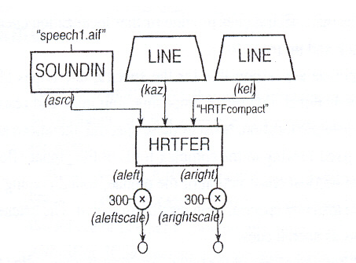

5. EJEMPLOS en Csound
1. Reverberaciones
A continuación, pasamos a explicar el comportamiento de uno de los ficheros que se expone como ejemplo.
| Comenzamos con el archivo orquesta de 2312.orc. |
|---|
| Su cabecera de inicio: |
sr = 44100kr = 4410ksmps = 10nchnls = 2 |
| A continuación se definen las variables globales que se van a utilizar a lo largo del programa orquesta: |
gifeed = .5gilp1 = 1/10gilp2 = 1/23gilp3 = 1/41giroll = 3000gadrysig = 0 |
| La definición del instrumento: |
instr 2307idryamt = 1 - p4iwetamt = p4 |
Aquí llamamos mediante la función soundin al archivo "speech1.aif" y la salida es una variable asndfile: |
asndfile = soundin "speech1.aif", 0 |
| Realizamos una serie de transformaciones sobre el archivo de audio extraído en la sentencia anterior: |
gadrysig = gadrysig + asndfile * iwetamt |
| Sacamos el resultado a la salida mediante la función outs: |
outs asndfile * idryamt, asndfile * idryamtendin |
| Tenemos definido un segundo instrumento que implementará el fenómeno de reverberación: |
instr 2312atmp = [alpass](http://emu.music.ufl.edu/csman/sigmod/comb.htm) gadrysig, 1.7, .1aleft = [alpass](http://emu.music.ufl.edu/csman/sigmod/comb.htm) atmp, 1.01, .07atmp = [alpass](http://emu.music.ufl.edu/csman/sigmod/comb.htm) gadrysig, 1.5, .2aright = [alpass](http://emu.music.ufl.edu/csman/sigmod/comb.htm) atmp, 1.33, .05 |
kdel1 = [randi](http://emu.music.ufl.edu/csman/siggen/rand.htm) .01, 1, .666kdel1 = kdel1 + .1 |
addl1 = [delayr](http://emu.music.ufl.edu/csman/sigmod/delayr.htm) .3afeed1 = [deltapi](http://emu.music.ufl.edu/csman/sigmod/deltap.htm) kdel1afeed1 = afeed1 + gifeed * aleft |
delayw aleft |
kdel2 = [randi](http://emu.music.ufl.edu/csman/siggen/rand.htm) .01, .95, .777kdel2 = kdel2 + .1addl2 = [delayr](http://emu.music.ufl.edu/csman/sigmod/delayr.htm) .3afeed2 = [deltapi](http://emu.music.ufl.edu/csman/sigmod/deltap.htm) kdel2afeed2 = afeed2 + gifeed * arightdelayw aright |
outs aleft, arightgadrysig = 0endin |
| La sintaxis del archivo 2312.sco: El instrumento 2307 se ejecutará de 0 hasta 8 segundos, mientras que el instrumento 2312 se ejecutará desde 0 hasta los 12 segundos. |
|---|
;INST ST DUR REVERB_AMTi 2307 0 8 .4i 2312 0 12 |
2. 3D SOUND
Se recomienda leer previamente el apartado de funciones, como referencia, así como los manuales. Hay algunos muy simplificados.
Empecemos con un ejemplo sencillo, lo podemos encontrar en la referencia 2. A continuación, pasamos a explicar el comportamiento de este fichero y más adelante haremos unas modificaciones e implementaremos otros efectos.
| Comenzamos con el archivo orquesta. Tal y como hemos explicado en secciones anteriores, la cosa quedaría así. |
|---|
sr = 44100kr = 4410ksmps = 10nchnls = 2 |
instr 2501 ; HRTFER ejemplo de archivo orquesta.iazstart = p4iazend = p5ielstart = p6ielend = p7 |
Mueve el sonido horizontalmente desde IAZSTART hacia IAZEND: |
kaz = [line](http://emu.music.ufl.edu/csman/siggen/line.htm) iazstart, p3, iazend |
Mueve el sonido verticalmente desde IELSTART a IELEND: |
kel = [line](http://emu.music.ufl.edu/csman/siggen/line.htm) ielstart, p3, ielend |
Aquí llamamos mediante la función soundin al archivo "speech1.aif" y la salida es una variable a_rsr (a_source): |
asrc = soundin "speech1.aif" |
| Aquí es cuando utilizamos la función hrtfer: |
aleft, aright = hrtfer asrc, kaz, kel, "HRTFcompact" |
aleftscale = aleft * 300arightscale = aright * 300 |
| Sacamos el resultado a la salida mediante la función outs: |
outs aleftscale, arightscaleendin |
La sintaxis del “score” o del archivo partitura es distinta y más complicada. En primer lugar, el propósito del score es indicar a los instrumentos cuándo deben tocar. La sintaxis del score se puede ver en el apartado 2 y 2.1.
En el caso de nuestro estudio, el archivo partitura es:
f 1 0 8192 10 1; INST ST DUR AZ START AZ END EL START EL ENDi 2501 0 7.57 0 360 -45 45
A continuación, dejamos los archivos estudiados y el resultado del archivo de audio. Estos son ejemplos del libro de Richard Boulanger, Csound Book. Te recomendamos guardar los archivos e intentar jugar con los parámetros, pues a partir de aquí ya se puede crear todos los archivos que se quieran.
| ARCHIVO ORQUESTA (.orc) | ARCHIVO PARTITURA (.sco) | RESULTADO |
|---|---|---|
| 2501.orc | 2501.sco |
Ponemos ahora un esquema del sonido 2501, tal y como se hace en Csound:

[2] Csound Book. Richard Boulanger. Pág. 502